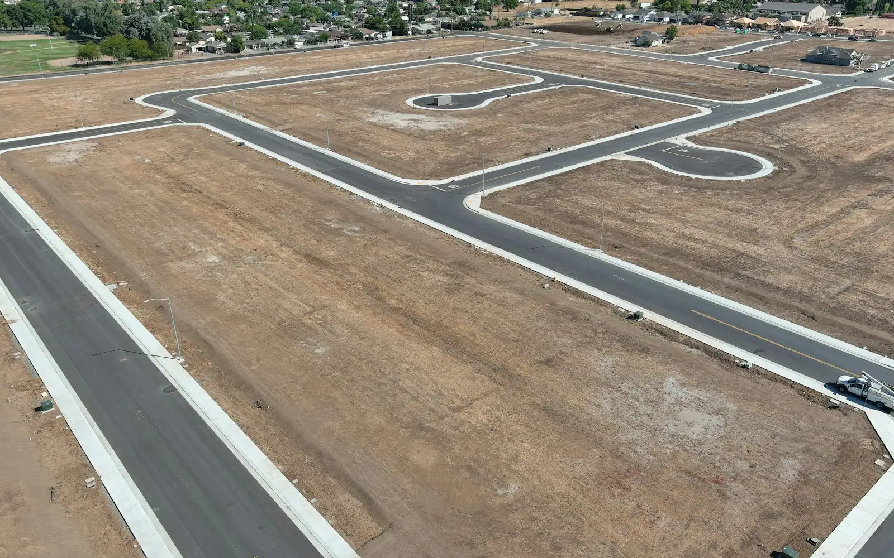

Development finance
For when the land becomes a project: several units, lots or a subdivision, with the loan sized to the project's costs and expected sale value.
See development finance →
Development land finance · Australia-wide
Loans to buy a site you intend to build on or sell on, with or without development approval. The lender looks at what the land is worth today, and at your plan for it.
Ask about this loan
ContinueIndicative ranges only. Each lender sets its own limits.
Usually less than for a finished building: commonly about 50–65% of the land's value, and lower for raw land.

Yes. Land that is already zoned for your plan, with a DA approved, is the easiest to fund.
By planning for holding costs (interest, rates and insurance) from day one, using one or more of the options below.
The land loan is usually refinanced into a construction or development loan that also pays for the build.
When your timing, the site or the plan doesn't match what land lenders want.
For when the land becomes a project: several units, lots or a subdivision, with the loan sized to the project's costs and expected sale value.
See development finance →The usual next step once you hold approvals and a build contract, with money paid out in stages as work is done.
See construction finance →Short-term funding to settle on a site quickly while you arrange longer-term finance or sell another asset.
See bridging loans →For self-employed buyers whose recent financials don't tell the full story. The lender assesses fewer documents, often at a lower LVR.
See low-doc loans →Not usually a fit: equipment and chattel finance, because land is not equipment. Machinery for the build can be financed separately later.
Example structure — illustrative
Situation: A small Hunter builder buying a 4,000 m² residential-zoned block with a DA approved for eight townhouses, to build and sell the dwellings.
Constraint: The builder wanted to keep cash for the build, and the bank they asked first would not lend on the land alone before construction started.
Structure: A non-bank land loan on the current land value, interest-only for 12 months with interest prepaid from the loan. The builder will refinance into a construction facility once the building contract and costs are settled, with land equity counted as their contribution.
Loan $1.8m · LVR 60% · Lender tier Non-bank · Days to settle 38
Buying a site to develop?
Five short questions, about 2 minutes. Early enquiries get a written reply within two business days.
Our broker fees · Payable at settlement only · No engagement fee
Streamline
$0
Standard purchases and refinances.
Structured
1.25%
Min $5,000 · several companies or trusts, SMSF (self-managed super fund), or lenders that aren't banks.
Specialist
1.75%
Past credit problems, development, private lenders.
Land loans from banks or non-bank lenders usually fall under the Structured tier. Land from private lenders, or rezoning plays, is Specialist. See the full fee schedule for worked examples and when each tier applies.
Examples of lenders commonly available to commercial brokers through an aggregator panel. Our own accreditations (approvals to arrange loans with each lender) are in progress, so these are examples, not confirmed lenders.
Now taking early enquiries. Deal assessments open once our lender panel is confirmed — early enquiries are contacted first.
See Lambton Capital first in Google
Add us as a preferred source and our deal notes and guides are highlighted for you in Top Stories, AI Overviews and AI Mode.
Reviewed by Thomas Coppen, Founder · Updated